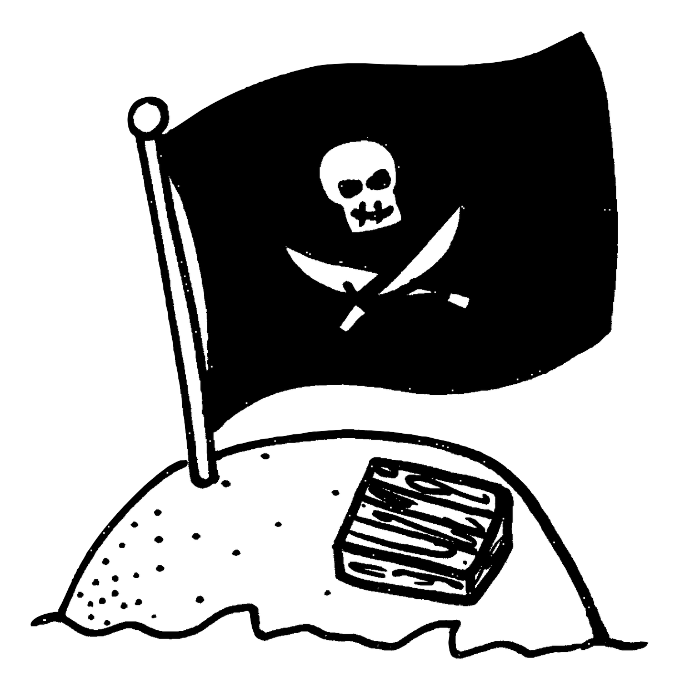

Rivers of America: 2 Deaths
In June 1973, an 18-year-old New York resident and his 10-year-old brother stayed on Tom Sawyer's Island past closing time by hiding in an area that is off-limits to guests. When they wanted to leave the island, they decided to swim across the river, despite the younger brother not knowing how to swim. The 18-year-old attempted to carry his younger brother on his back and drowned halfway across. His body was found the next morning. The younger brother was able to stay afloat by "dog paddling" until a ride operator rescued him.
On June 4, 1983, an 18-year-old boy from Albuquerque, New Mexico drowned in the Rivers of America while trying to pilot a rubber emergency boat from Tom Sawyer's Island that he and a friend had stolen from a restricted area of the island during Disneyland's annual Grad Nite. Both individuals were intoxicated at the time of the incident. The victim's mother sued Disneyland for negligence in even allowing her inebriated son onto the premise as well as the travel agency that arranged the trip for not properly supervising the teenagers. The lawsuits were unsuccessful.